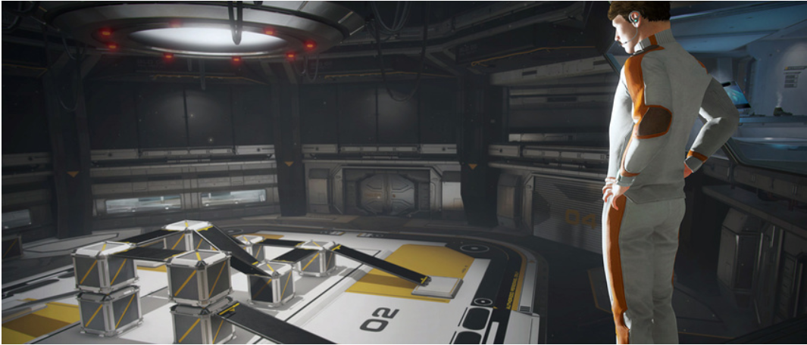
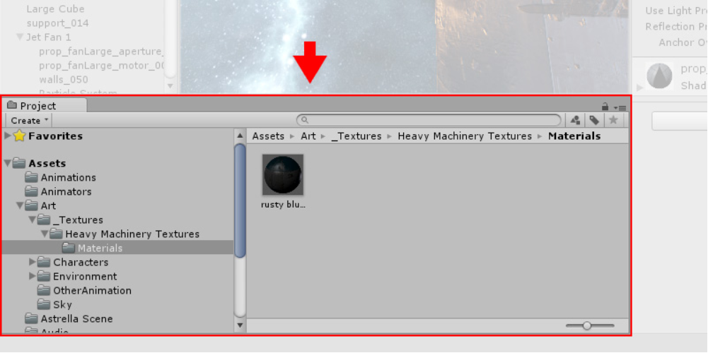
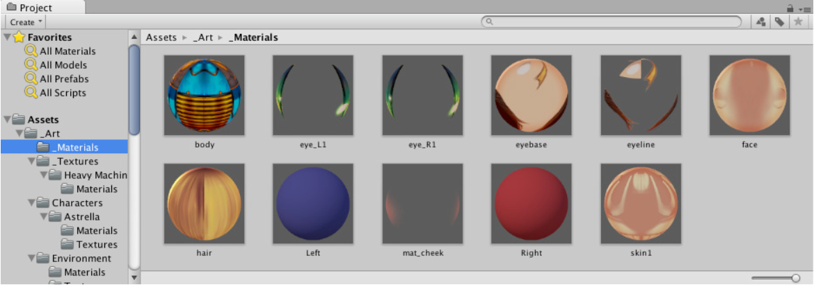
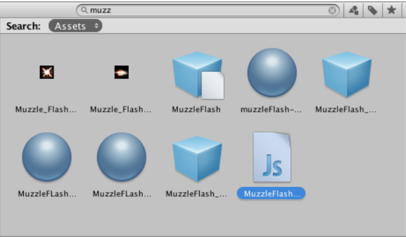
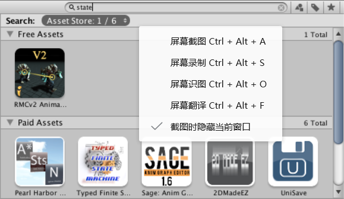

本部分是开始使用 Unity 的关键部分，介绍了 Unity 界面、菜单项、使用资源、创建场景和发布构建。
阅读完本部分后，您将了解 Unity 的工作原理，如何有效使用该程序，以及如何合成基本游戏。
安装方法
Hub 提供了一个管理 Editor 安装、帐户和许可证以及项目的集中位置。有关使用 Hub 来安装 Editor 的更多信息，请参阅使用 Hub 来安装 Unity。
可以使用下载助手 (Download Assistant) 安装 Editor。如果以后选择安装 Hub，可以届时将其添加到 Hub。有关更多信息，请参阅使用下载助手来安装 Unity。
Unity 下载助手支持离线部署。在这种部署方式中，可下载用于安装 Unity 的所有文件，然后生成脚本以便在未接入互联网的计算机上安装 Editor。
有关更多信息，请参阅使用下载助手来离线安装 Unity
主要窗口
- Project窗口

在此视图中，可访问和管理属于项目的资源。

浏览器的左侧面板将项目的文件夹结构显示为层级列表。通过单击从列表中选择文件夹时，文件夹内容将显示在右侧面板中。
可单击小三角形来展开或折叠文件夹，显示文件夹包含的任何嵌套文件夹。
单击时按住 Alt 键将以递归方式展开或折叠所有嵌套文件夹。
Window 菜单提供了切换到 Project 视图单列版本（基本上就是没有图标视图的层级结构列表）的选项。
该菜单旁边的锁图标允许使用与 Inspector 锁类似的方式“冻结”视图的当前内容（即阻止其他地方的事件更改这些内容）。

搜索
浏览器具有强大的搜索功能，对于在大型或不熟悉的项目中查找资源特别有用。基本搜索将根据搜索框中输入的文本过滤资源

搜索Asset Store
Project Browser 的搜索也可应用于 Unity Asset Store 中可用的资源。
如果从痕迹导航栏的菜单中选择 __Asset Store__，则会显示 Asset Store 中与查询匹配的所有免费和付费资源。
按类型和标签搜索的工作方式与 Unity 项目相同。
首先根据资源名称检查搜索查询词，然后按顺序检查资源包名称、资源包标签和资源包描述
（因此，名称中包含搜索词的项的排名将高于资源包描述中包含该搜索词的项）。
